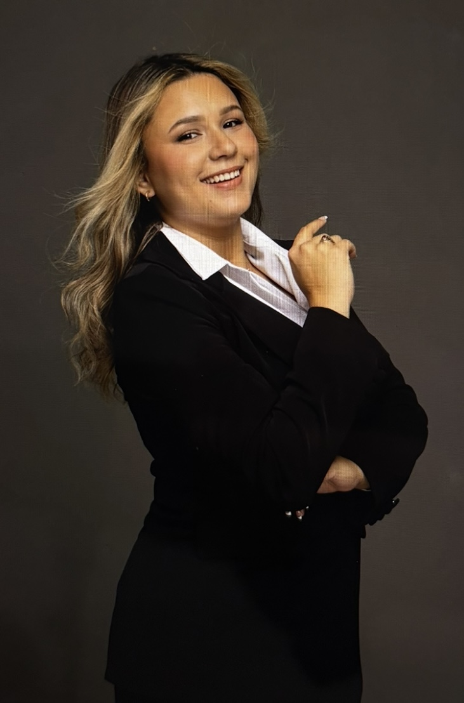

Home Page
Leorenny Rojas: Born and raised in Venezuela, living in the United States, Immigration paralegal by profession over five years, and a current student at Valencia College pursuing an Associate in Science degree with a major in Mobile Journalism. My background in immigration and legal support has shaped my passion for storytelling and advocacy, and I am now combining that experience with hands-on training in multimedia reporting to amplify underrepresented voices and bring impactful stories to the public.
This is my first website

This image is from a photoshoot I did with my current employer for our new website.